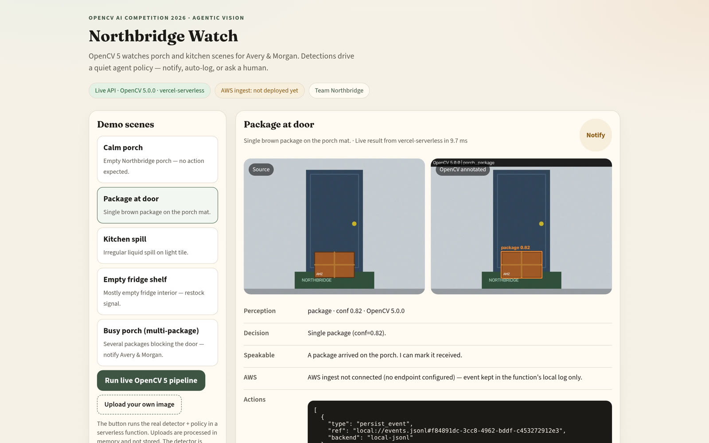
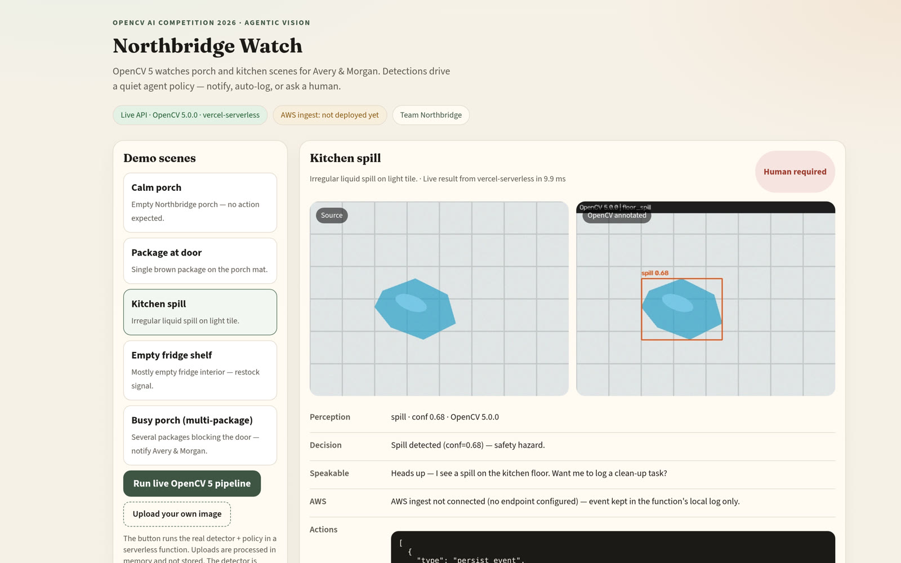
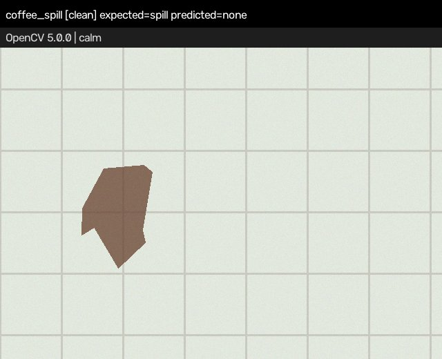
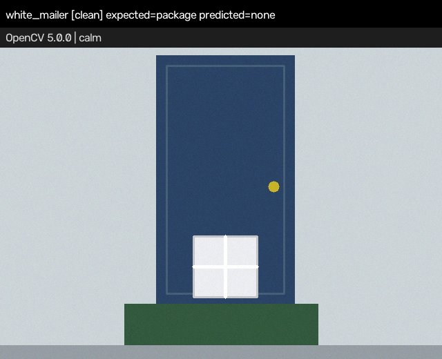

Quiet-by-default home vision. Classical OpenCV 5 sees the porch and kitchen, and a small policy agent decides: stay silent, log, notify one person, or ask a human.
Team Northbridge · household of Avery & Morgan (pseudonyms)
Home cameras spam alerts. Nobody wants a ping for an empty porch.
After a week of “motion at front door”, people mute the camera — and then miss the one alert that mattered: a package left in the rain, a spill someone could slip on, an empty fridge before the weekend.
Avery & Morgan want the opposite: a camera that stays quiet unless something really changed, and that asks a person when the stakes are real.
2 / 8
Our solution
Quiet by default. Perception changes the plan.
Every frame ends in exactly one of four actions, with a full trace: perception → decision → speakable message → action JSON.
noop
Calm porch or kitchen. Nobody is pinged.
auto_log
Low-stakes event, logged quietly (and during quiet hours).
notify
One person, one short message: “A package arrived on the porch.” Empty fridge → restock note for Morgan.
human_required
Safety events (floor spill) always go to a human; Avery & Morgan must acknowledge.
Scenes: calm porch · package at door · busy porch (2+ packages, doorway blocked → escalate) · kitchen floor spill · empty vs. full fridge shelf.
3 / 8
How it works
Classical OpenCV 5 — no black box
cv.resize
Fixed 640×480 working frame (fixes half-res failures)
→
cvtColor HSV · inRange · morphologyEx
Cardboard and liquid masks
→
findContours · approxPolyDP · convexHull
Box vs. spill by shape and solidity
→
Sobel · Canny · occupancy gate
Shelf lines, floor tiles, empty vs. full fridge (4% gate)
Spill = safety hazard → always a human
≥ 2 packages → doorway blocked → escalate
Calm → never notifies · quiet hours hold non-urgent pings
Deterministic PolicyEngine + AgentOrchestrator in one Python package, 42 pytest tests + CI, one-command demo (make demo).
4 / 8
Live demo · northbridge-watch.vercel.app
The real pipeline, running serverless

Package at door → notify Avery.

Kitchen spill → human_required, Avery & Morgan.
Measured on the live URL (2026-10-25, 15 warm requests): server-side pipeline ≈ 10 ms per frame (9.8–13.7 ms), browser round trip 67–124 ms. Uploads are processed in memory and never stored.
5 / 8
Measured results · held-out synthetic test split
Label accuracy, v1 → v2
Condition (280 images each)
v1 (original)
v2 (current)
v2 spill recall
clean
82.9%
96.8%
87.5%
photometric shift
80.7%
92.1%
70.0%
blur + noise
83.9%
97.5%
87.5%
JPEG q30
83.2%
96.8%
87.5%
half resolution (320×240)
44.6%
96.8%
87.5%
out-of-domain, 120 images (coffee spill, white mailer, night package)
—
33.3%
0.0%
7 randomized scene families × 40 per condition; thresholds tuned only on dev seeds, numbers on held-out test seeds. OpenCV 5.0.0. Reproduce: make eval / make baseline. Synthetic data only — a sanity check, not real-world accuracy. Source: technical report §4.
6 / 8
Deployment, limitations, responsible use
Honest about the edges
Vercellive Same Python + OpenCV 5 package as a serverless function: /api/analyze, /api/health.
AWS Lambda · S3 · SNSdeploy-ready, not yet deployed SAM stack (API Gateway → Lambda arm64 → S3 event log + SNS) written and unit-tested; make deploy-aws deploys it and wires it into the app.
Responsible use: no faces or people detected or identified; uploads not stored; safety events always go to a human; pseudonymous household.
Synthetic scenes from our own generator, not real photos — real photos often come back “calm”.
Colour-dependent: coffee-coloured spills and white mailers are missed.
Spill recall drops to 70% under lighting changes.


Known misses: coffee spill (left), white mailer (right).